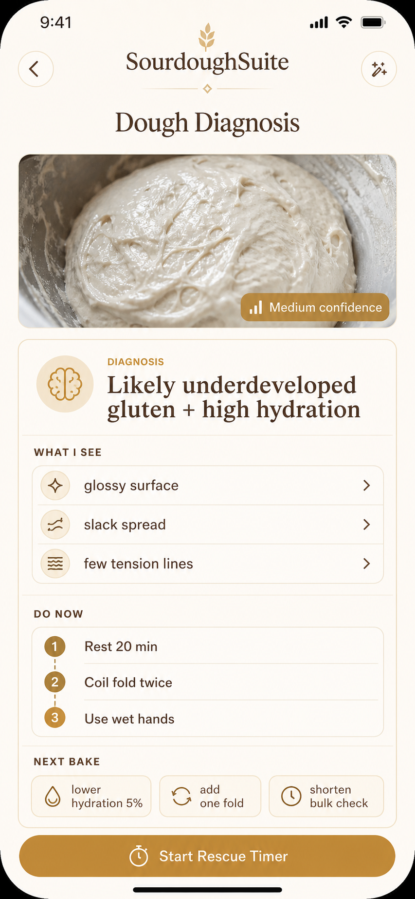

Oven-light demo mode
Your dough has a next move.
SourdoughSuite turns a messy baking moment into a diagnosis, a rescue step, and a timed plan before the dough gets away from you.
Photo
Analyze dough, starter, crumb, or loaf with visual context.
Rescue
Get immediate actions that are cautious and practical.
Plan
Generate a deterministic bake-day timeline from the diagnosis.
Fallback
Quick Rescue keeps the demo useful when AI is unavailable.
Golden path
Diagnose the visible clues. Schedule the recovery.
The app is designed for the stressful middle of sourdough: dough looks glossy, bulk timing is uncertain, or the starter is not behaving. The experience moves from evidence to action to timeline without making the user hunt for tools.

